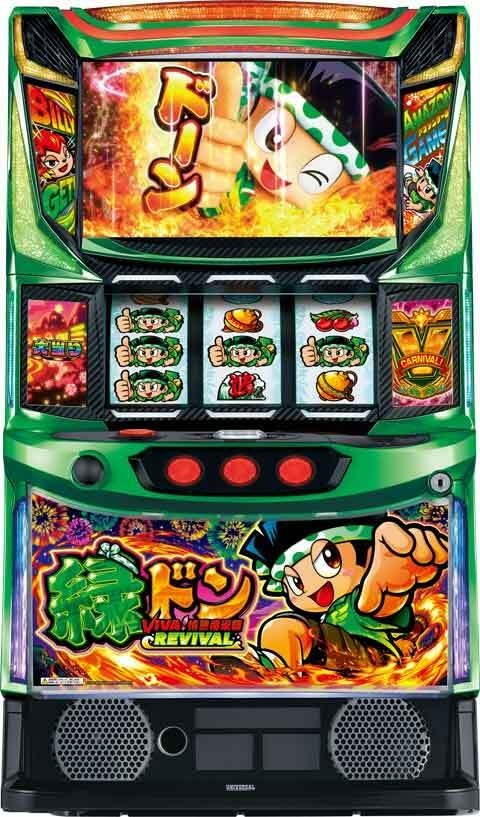
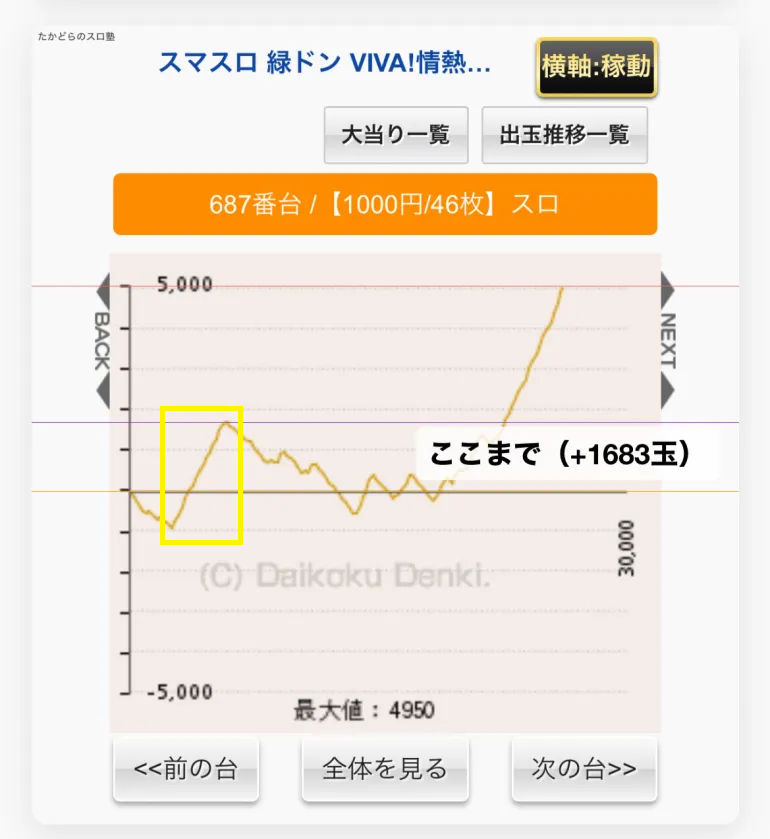
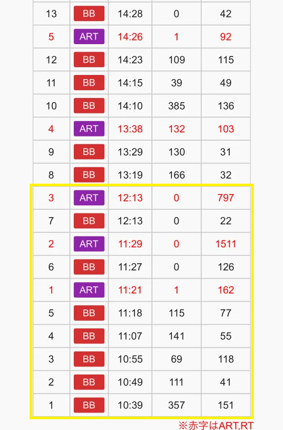
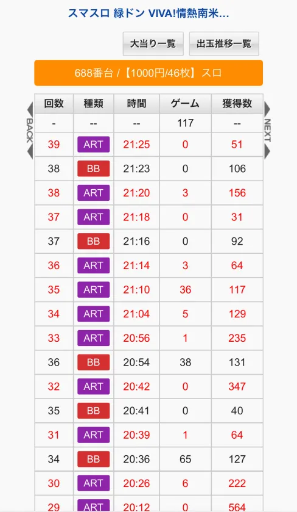
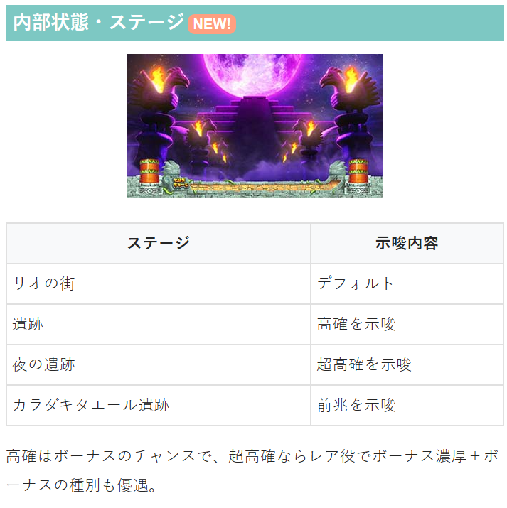
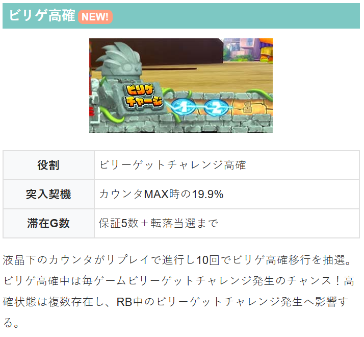

L緑ドン VIVA!情熱南米編 REVIVAL


狙い目
【リセット狙い】
250Gから
【ゲーム数天井狙い】
750Gから
【スルー天井狙い】
8スルー以上 AT当選まで
【ビリゲ高確狙い】
ビリゲカウンタ 9個から 10個溜まった後、高確移行の有無を確認。
【有利区間関連狙い】
差枚+1200枚以上 ボーナス当選まで？高確やビリゲカウンタを積極的に狙っていく感じ？
有利切れをするとREVIVAL高確へ行くため、REVIVAL高確に行ってなさそうな履歴の台を狙う感じになりそう。
現状、有利切れ条件が不明。+1000枚程度でREVIVAL高確行くケースもある。現在のところ最大+1683枚で行かないケースがある。+1000枚前後から有利切れしてそうな履歴が出てくる。
差枚+1683枚で有利切れていない履歴
最後の連チャンの差枚+2400枚前後でREVIVAL成功履歴あり。


やめ時
AT後、レギュラー後は高確消化してやめ？
ビッグ後は即やめ？高確確認？
XRチャレンジ失敗後に超高確ステージへ移行するとAT当選濃厚。
エンディング後はXRチャレンジ失敗→超高確ステージを経由して必ずAT告知があるようなので即ヤメ厳禁。
その他
履歴について
ART 2-6G 引き戻しかエンディング後のREVIVAL成功？
ART 7-37G REVIVAL成功か早い直撃の初当たり
BB 38G REVIVAL失敗時のXBB濃厚



参考元
基本情報
- メーカー: ユニバーサルブロス
- 機械割: 97.5% 〜 114.9%
- 導入開始日: 2025年05月07日（水）
- ゲーム性概要: ●スマスロになって緑ドンが復活！ ●AT当選のメインルートはレア役契機のボーナス ●ビリゲ成功でAT濃厚 ●ATは純増約2.5枚/Gのゲーム数管理型 ●MAX継続率95%のエクストリームラッシュ搭載 ●ロケットモードがSTタイプになって進化


打ち方
打ち方・小役
打ち方（小役狙い）
［最初に狙う絵柄］ 左リール上段付近にBARを目押し。波がスベってきた場合のみ、中リールに波を目押ししよう（BARorドンちゃん目安）。

［波停止時］ 上記停止形は弱波or強波or共通ベルが成立。中リールに波を目押しして（BARorドン目安）、右リールは取りこぼしがないのでフリー打ちでOKだ。

［レア役・共通ベルの停止例］

※リプレイ絵柄は2種類あるがどちらでもOK
変則押しはNG
通常時は左1stでの消化を推奨だ。
解析情報通常時
小役関連
ボーナス・AT抽選
内部状態（通常・高確・超高確）を参照して、レア役成立時にボーナスを抽選。 レア役以外でもATの直撃抽選があるため、液晶で強めの演出が発生した時は注目しておこう。
ボーナス・AT当選の期待度序列
| 役 | 期待度序列 |
|---|---|
| その他 | 低 |
| 弱チェリー | ↓ |
| 弱波 | ↓ |
| チャンス目 | ↓ |
| 強チェリー | ↓ |
| 強波 | ↓ |
| リーチ目役 | 高 |
［設定差なし］小役確率
| 役 | 確率 |
|---|---|
| 通常リプレイA | 1/9.5 |
| 通常リプレイB | 1/4096.0 |
| 逆押しドン揃いリプレイ | 1/32.0 |
| 押し順ベル | 1/1.5 |
| 強波 | 1/436.9 |
| 強チェリー | 1/327.7 |
| チャンス目 | 1/218.5 |
※押し順ベルはこぼし含めて0枚or1枚or8枚or15枚
［設定差あり］小役確率
弱レア役は高設定ほど出現しやすい。
リールロックの動き
| ロックのパターン | 動き |
|---|---|
| ショート | リールが１コマ上昇して すぐに回転開始 |
| ミドル | リールが１コマ上昇しして しばらく停止した後に回転開始 |
| 特殊 | リール１コマ上昇までのウェイトが若干⾧い ※上昇後の動作はショートロックと同じ |
ボーナス当選時・成立役ごとのリールロック発生割合
| 役 | なし | ショート | ミドル | 特殊 |
|---|---|---|---|---|
| その他 | 99.6% | 0.4% | 一 | 一 |
| リーチ目リプレイ | 50.0% | 18.8% | 25.0% | 6.3% |
| 弱波 | 75.0% | 22.7% | 0.8% | 1.6% |
| 強波 | 55.1% | 24.6% | 18.8% | 1.6% |
| 弱チェリー | 75.0% | 22.7% | 0.8% | 1.6% |
| 強チェリー | 55.1% | 24.6% | 18.8% | 1.6% |
| チャンス目 | 60.2% | 27.3% | 10.9% | 1.6% |
成立役と抽選結果（ボーナス当選の有無）でリールロックが発生するかと発生時の段階（ショート〜特殊）を決定する。
内部状態関連
高確・超高確率概要
通常時はおもにレア役を契機に高確や超高確へ移行（ボーナス当選期待度に影響）。リプレイで転落を抽選する。超高確は保証10Gがあり、滞在中にレア役を引けばボーナス濃厚になる。
高確・超高確 性能
| 項目 | 内容 |
|---|---|
| 移行契機 | 高確はおもにチェリー、 超高確は波・チェリーから移行 |
| 転落契機 | リプレイ時の抽選（超高確は保証10Gあり） |
| 滞在中の恩恵 | 高確中はボーナス当選率アップ、 超高確中はレア役成立＝ボーナス濃厚 |
設定変更時・BIG終了時の高確移行率
| タイミング | 移行率 |
|---|---|
| 設定変更時・BIG終了後 | 50.0% |
設定変更時およびBIG終了後は50%で高確へ移行する。
［通常滞在時］小役契機の高確・超高確移行率 設定1～4
| 役 | 高確へ | 超高確へ |
|---|---|---|
| その他 | 0.4% | 一 |
| リプレイ | 一 | 一 |
| 弱波 | 0.4% | 3.1% |
| 強波 | 0.4% | 0.4% |
| 弱チェリー | 50.0% | 0.4% |
| 強チェリー | 25.0% | 0.4% |
設定5・6
| 役 | 高確へ | 超高確へ |
|---|---|---|
| その他 | 0.8% | 一 |
| リプレイ | 一 | 一 |
| 弱波 | 0.8% | 3.1% |
| 強波 | 0.8% | 0.4% |
| 弱チェリー | 50.0% | 0.4% |
| 強チェリー | 25.0% | 0.4% |
※その他…押し順ベルを除く
設定5・6は設定4以下よりもチェリー以外からの高確移行率が高い。
［高確滞在時］小役契機の超高確移行率＆転落率
| 役 | 超高確へ | 通常へ転落 |
|---|---|---|
| その他 | 一 | 一 |
| リプレイ | 一 | 25.0% |
| 弱波 | 33.2% | 一 |
| 強波 | 3.1% | 一 |
| 弱チェリー | 6.3% | 一 |
| 強チェリー | 3.1% | 一 |
ボーナス抽選
［超高確滞在時］ボーナス当選率
| 役 | 全設定共通 |
|---|---|
| その他 | 0.4% |
| レア役 | 100% |
| リーチ目リプレイ | 100% |
［通常・高確滞在時］ボーナス種別振り分け
| ボーナス | 右記以外 | REG・AT後50G以内 |
|---|---|---|
| REG | 50.0% | 33.2% |
| BIG | 49.6% | 61.7% |
| エクストラBIG | 0.4% | 5.1% |
REGやAT後（XRチャレンジ失敗後）は50G間のボーナス種別優遇状態へ移行。滞在中はBIG以上の割合がアップする。 リーチ目リプレイ契機はREGが選択された場合でも、必ずBIG以上に書き換えられる。
［超高確滞在時］ボーナス種別振り分け
| ボーナス | その他 | 弱波・弱チェリー | 強波・強チェリー | |
|---|---|---|---|---|
| REG | 66.8% | 50.0% | － | |
| BIG | 32.8% | 48.4% | 89.8% | |
| エクストラBIG | 0.4% | 1.6% | 10.2% | |
| ボーナス | チャンス目 | リーチ目リプレイ | ||
| REG | 25.0% | － | ||
| BIG | 69.9% | － | ||
| エクストラBIG | 5.1% | 100% |
BIG当選後の絵柄＆ライン振り分け
| 絵柄＆ライン | 振り分け |
|---|---|
| ドン揃い | 33.2% |
| 中段赤七揃い | 50.0% |
| 斜め赤七揃い | 16.8% |
BIG当選時は抽選で絵柄とラインが抽選される。
ビリゲ高確
ビリゲ高確概要
通常時はリプレイを10回引くごとにビリゲ高確への移行を抽選。リプレイ回数は液晶下部に表示されている（このシステム自体をビリゲチャージという）。 ビリゲ高確中は毎ゲーム「ビリゲチャレンジ」発生を抽選。ビリゲチャレンジはREG中と同じく、2択当てに成功すればATに当選する。

ビリゲ高確性能
| 項目 | 内容 |
|---|---|
| 移行契機 | リプレイ10回成立ごとの19.9% |
| 保証ゲーム数 | 5G |
| 消化中の抽選 | 毎ゲームビリーゲットチャレンジを抽選 |
［ビリゲチャレンジ］

※ビリゲチャレンジの正式名はビリーゲットチャレンジ
ビリゲ高確＆超高確からの転落率
| 契機 | 転落率 |
|---|---|
| 保証ゲーム終了後かつビリゲチャレンジ非当選のビリゲ役 | 67.2% |
転落は保証ゲーム数なしかつ、ビリゲチャレンジ非当選のビリゲ役成立時に上記数値で抽選される。
ビリゲ高確＆超高確中のビリゲチャレンジ確率
| 当選 | ビリゲ高確中 | ビリゲ超高確中 |
|---|---|---|
| ビリゲチャレンジ | 1/29.0 | 1/58.1 |
| 超ビリゲチャレンジ | 一 | 1/58.1 |
通常時にビリゲチャレンジが発生するのはビリゲ高確orビリゲ超高確中のみ。ビリゲチャレンジの確率は高確・超高確で同じだが、超高確中は当選時の半分が超ビリゲチャレンジになる。
直撃抽選
直撃当選時の種別割合
| 種別 | 割合 |
|---|---|
| BIG | 80.1% |
| エクストラBIG | 14.8% |
| ロングフリーズ | 5.1% |
通常リプレイB（1/4096.0）成立時に直撃を抽選。当選時はBIG以上濃厚となる。
天井
天井到達時のフリーズ発生率
| 契機 | 発生率 |
|---|---|
| AT・ボーナス間最大1280G（設定変更時は800G） | 33.2% |
天井到達時の恩恵
| パターン | 恩恵 |
|---|---|
| フリーズ非発生 | BIG＋AT |
| フリーズ発生 | BIG＋AT＋初回XRが高継続 ＋XRレベル4以上（XR継続率80%以上） |
ゲーム数天井到達時は約33%でフリーズが発生。設定変更後も同じ恩恵を得ることができるので、朝イチは狙い目だ。
フリーズ
ロングフリーズ動画
リールロック発生時や天井到達時の一部で発生。エクストラBIG＋高継続率のエクストリームラッシュ当選が濃厚となる。
ロングフリーズ


ロングフリーズ発生時は「エクストラBIG」・「XRレベル4以上」・「XR高継続ストック3個」という3種類の恩恵を獲得できる。
解析情報ボーナス時
ボーナス
BIG概要
初当り時は消化中にドンが揃えばATに当選、AT中はドン揃いでエクストリームラッシュ（XR）ストックやXRレベルのアップ濃厚。3連ドン停止からの中段ドン揃いはAT濃厚のエクストラビッグとなる。 3種類の告知モードを任意に選択できるところもポイントだ。

BIG性能
| 項目 | 内容 |
|---|---|
| 当選契機 | 成立役に応じた抽選（おもにレア役） |
| 1Gあたりの純増 | 約4.5枚 |
| 継続ゲーム数 | 25G |
| 平均獲得枚数 | 約113枚 |
| 初当り時のAT期待度 | 約40% |
| 通常時の抽選 | ATを抽選（ドン揃いでAT濃厚） |
| AT中の抽選 | XRレベルアップ抽選、XRストック抽選 |
※エクストラビッグ中の抽選はAT中と同じ
今作でもドンが中段に揃えば高継続のXR濃厚になる。
告知モード
| モード | 特徴 |
|---|---|
| ドンビッグ | ● チャンス告知タイプ ● 狙えカットイン時のドン揃いで成功 |
| ファビオ＆マリアビッグ | ● 完全告知タイプ ● 告知発生で成功 |
| 葉月ビッグ | ● 後告知タイプ ● 最終ゲームで成否を告知 ● AT中は告知発生でXRストック濃厚 |
［ドンちゃんビッグ］

［ファビオ＆マリアビッグ］

［葉月ビッグ］

REG概要
REG中は当選時の内部状態に応じて、毎ゲームビリゲチャレンジを抽選。ビリゲチャレンジの2択に正解すればAT濃厚となる。AT中REGのビリゲチャレンジは正解＝エクストリームラッシュ（XR）ストック濃厚だ。 REG入賞時にコンチ音が発生してセピア色の画面に変化する 「特殊REG」 も存在。特殊REGはAT濃厚＋超ビリゲチャレンジ（正解で高継続のXR濃厚）の超高確状態になる。

［終了後は高確＋ボーナス種別優遇状態へ］ REG後は必ず高確へ移行。さらに50G間はボーナス種別優遇状態へ移行するため、50G以内にボーナスが当選すればBIGのチャンスになる。
REG性能
| 項目 | 内容 |
|---|---|
| 当選契機 | 成立役に応じた抽選（おもにレア役） |
| 1Gあたりの純増 | 約4.5枚 |
| 継続ゲーム数 | ベルナビ5回まで |
| 平均獲得枚数 | 約23枚 |
| 通常時の抽選 | ビリゲチャレンジ（成功でAT） |
| AT中の抽選 | ビリゲチャレンジ（成功でXRストック） |
| その他 | 当選時の内部状態でビリゲチャレンジ確率変化、 特殊REGはAT濃厚＋超高確状態 |
超高確中に当選したビリゲチャレンジは、必ず超ビリゲチャレンジになる。
内部状態ごとのビリゲチャレンジ確率
| 内部状態 | 確率 |
|---|---|
| 通常 | 1/71.3 |
| 高確 | 1/10.1 |
| 超高確 | 1/6.1 |
［ビリゲチャレンジ］ 2択当て！

［特殊REG］

［超ビリゲチャレンジ］

※ビリゲチャレンジの正式名はビリーゲットチャレンジ
BIG中のAT当選率（AT当選後はXRレベルアップ）
| 役 | 当選率 |
|---|---|
| 15枚ベル | 3.5% |
| 弱波 | 19.9% |
| 強波 | 66.8% |
| 弱チェリー | 12.5% |
| 強チェリー | 50.0% |
| チャンス目 | 33.2% |
| リーチ目リプレイ | 100% |
すでにATが当選している状態で上記抽選に当選した場合はXRレベルが1段階アップする。
BIG中のAT当選率（XR当選率） 残り8G以下
| 役 | フェイク | ドン揃い | 中段ドン揃い |
|---|---|---|---|
| リーチ目リプレイ | 一 | 一 | 100% |
| 15枚ベル | 0.4% | 3.5% | 一 |
| 弱波 | 10.2% | 19.5% | 0.4% |
| 強波 | 33.2% | 61.7% | 5.1% |
| 弱チェリー | 6.3% | 12.1% | 0.4% |
| 強チェリー | 50.0% | 46.9% | 3.1% |
| チャンス目 | 16.8% | 31.6% | 1.6% |
残り9G以上
| 役 | フェイク | ドン揃い | 中段ドン揃い |
|---|---|---|---|
| リーチ目リプレイ | 一 | 一 | 100% |
| 15枚ベル | 10.5% | 3.5% | 一 |
| 弱波 | 55.1% | 19.5% | 0.4% |
| 強波 | 33.2% | 61.7% | 5.1% |
| 弱チェリー | 62.5% | 12.1% | 0.4% |
| 強チェリー | 50.0% | 46.9% | 3.1% |
| チャンス目 | 66.8% | 31.6% | 1.6% |
BIG中は残りゲーム数によってフェイクの発生率が異なるが、当選率自体は共通。 フェイクはドンBIGとエクストラBIG中は擬似遊技（失敗）が発生、その他のBIGではハズレとして扱われる。
REG中のAT当選率（AT当選後はXRレベルアップ）
| 役 | 当選率 |
|---|---|
| 弱波 | 3.1% |
| 強波 | 50.0% |
| 弱チェリー | 1.6% |
| 強チェリー | 25.0% |
| チャンス目 | 12.5% |
| リーチ目リプレイ | 100% |
AT中のボーナス種別振り分け
| ボーナス | 振り分け |
|---|---|
| REG | 50.0% |
| BIG | 48.4% |
| エクストラBIG | 1.6% |
全設定共通でBIG（エクストラ含む）とREGの比率は1：1だ。
ボーナス準備中のAT抽選
ボーナス確定画面で「×・?・?」ナビが出るまでの間、レア役でATを抽選する。

ボーナス準備中のAT当選率
| 役 | 当選率 |
|---|---|
| リーチ目リプレイ | 100% |
| 弱波・弱チェリー | 0.4% |
| 強波 | 33.2% |
| 強チェリー | 19.9% |
| チャンス目 | 10.2% |
アマゾンゲーム（AT）
AT概要
ATのメインパートで、開始時はエクストリームラッシュ（XR）からスタート。消化中はボーナス、エクストリームラッシュ（XR）、ロケットモード、ボーナス高確率などを抽選する。

アマゾンゲーム（AT）性能
| 項目 | 内容 |
|---|---|
| 当選契機 | BIG中の抽選、ビリゲチャレンジ成功など |
| 1Gあたりの純増 | 約2.5枚 |
| 継続ゲーム数 | 20G＋XRでの上乗せ分 |
| 消化中の抽選 | ボーナス、XR、ロケットモード、ボーナス高確率 |
| その他 | 終了後はXRチャレンジに移行 |
もちろんビリーをゲットすればXRだ！

状態別のボーナス当選率
| 演出 | その他 | ボーナス高確率中 |
|---|---|---|
| リーチ目リプレイ | 100% | 100% |
| 逆押しドンリプレイ | 0.4% | 100% |
| 弱波・弱チェリー | 0.4% | 33.2% |
| 強波・チャンス目 | 19.9% | 100% |
| 強チェリー | 14.8% | 100% |
ボーナス高確率中は逆押しドンリプレイor強レア役成立でボーナス濃厚になる。
XR当選率
| 役 | 当選率 |
|---|---|
| 弱波 | 25.0% |
| 強波 | 64.5% |
| 弱チェリー | 20.3% |
| 強チェリー | 57.1% |
| チャンス目 | 3.5% |
リールロックの動き
ボーナス当選の有無と成立役に応じてリールロックを抽選する。 ミドルなら強レア役濃厚かつ、弱レア役ならボーナス濃厚。特殊ロックはボーナス濃厚だ。
［ ボーナス非当選時 ］リールロック発生割合
| 役 | なし | ショート | ミドル | 特殊 |
|---|---|---|---|---|
| その他 | 100% | 一 | 一 | 一 |
| リーチ目リプレイ | 100% | 一 | 一 | 一 |
| 弱波 | 96.1% | 3.9% | 一 | 一 |
| 強波 | 75.0% | 23.4% | 1.6% | 一 |
| 弱チェリー | 96.1% | 3.9% | 一 | 一 |
| 強チェリー | 75.0% | 23.4% | 1.6% | 一 |
| チャンス目 | 80.1% | 19.5% | 0.4% | 一 |
XRレベル
XRレベル概要
ATにはエクストリームラッシュ（XR）当選時のXR継続率に影響する4段階のXRレベルが存在。レベルが高いほど当選したXRが高継続率になりやすい。レベルはサブ液晶のボードの色で示唆されている。 初期レベルはAT当選時に抽選。AT中のボーナス当選時やボーナス中のXRストック時に継続率が昇格する可能性がある。

ボードの色別の高継続率・選択期待度序列
| ボードの色 | 期待度序列 |
|---|---|
| 白 | 低 |
| 青 | ↓ |
| 黄 | ↓ |
| 緑 | ↓ |
| 赤 | 高 |
XRレベルごとのXR継続率
| レベル | 継続率 |
|---|---|
| 1 | 50%以上 |
| 2 | 60%以上 |
| 3 | 70%以上 |
| 4 | 80%以上 |
AT初当り時のXRレベル振り分け
| レベル | 振り分け |
|---|---|
| 1 | 84.8% |
| 2 | 11.7% |
| 3 | 3.1% |
| 4 | 0.4% |
ロングフリーズ経由など、特殊な当選ルートを除き、XRレベルはAT当選時に抽選で決定する（ロングフリーズ経由はレベル4濃厚）。
XRレベルごとの継続率振り分け 通常ストック時
| 継続率 | レベル1 | レベル2 | レベル3 | レベル4 |
|---|---|---|---|---|
| 50% | 80.1% | 一 | 一 | 一 |
| 60% | 14.5% | 80.1% | 一 | 一 |
| 70% | 3.1% | 16.0% | 80.1% | 一 |
| 80% | 1.6% | 3.1% | 19.1% | 97.7% |
| 90% | 0.4% | 0.4% | 0.4% | 1.6% |
| 95% | 0.4% | 0.4% | 0.4% | 0.8% |
高継続ストック時
| 継続率 | レベル1 | レベル2 | レベル3 | レベル4 |
|---|---|---|---|---|
| 50% | 一 | 一 | 一 | 一 |
| 60% | 一 | 一 | 一 | 一 |
| 70% | 一 | 一 | 一 | 一 |
| 80% | 一 | 一 | 一 | 一 |
| 90% | 96.9% | 93.8% | 87.5% | 75.0% |
| 95% | 3.1% | 6.3% | 12.5% | 25.0% |
XR開始時にXRレベルとXRストックの種別（通常or高継続）に応じて継続率を抽選する。
エクストリームラッシュ（XR）
XR概要
シリーズおなじみのゲーム数上乗せ特化ゾーン。開始時に4種類のゲーム数（5or10or20or30G）から 基礎ゲーム数 を決めて、次ゲームから 成立役＆継続率に応じて継続の成否 を抽選する。継続時は基礎ゲームをATゲーム数として上乗せ。特定セット（継続回数）到達時はコンボボーナスが発生して追加上乗せを獲得できる。 レア役時やコンボボーナス時は新要素の「オカワリ」で追加上乗せを獲得する可能性がある。

継続率＆基礎ゲーム数
| 項目 | 内容 |
|---|---|
| 継続率 | 50% or 60% or 70% or 80% or 90% or 95% |
| 基礎ゲーム数 | 5G or 10G or 20G or 30G |
［開始画面の色で継続率示唆］ 開始画面表示時にサブ液晶をタッチすると、さらに色が変化する可能性がある。

［基礎ゲーム数決定］

［継続ジャッジ］ トリックを決めれば継続＆上乗せゲット。

［コンボボーナス］ 今回も特定回数継続でコンボボーナスが発生する。

［オカワリ］ ボタン連打で追加上乗せを獲得。おかわりにはナミモリ（青）＜モリモリ（緑）＜マシマシ（赤）の3パターンがある。

XRの初期ゲーム数振り分け
| 役 | 5G | 10G | 20G | 30G |
|---|---|---|---|---|
| その他 | 85.2% | 13.7% | 0.8% | 0.4% |
| リーチ目リプレイ | 一 | 一 | 一 | 100% |
| 弱波・弱チェリー | 一 | 89.8% | 9.4% | 0.8% |
| 強波・強チェリー | 一 | 一 | 93.8% | 6.3% |
| チャンス目 | 一 | 50.0% | 46.9% | 3.1% |
XR開始時の成立役に応じて基礎ゲーム数を抽選する。
規定コンボ数到達時のオカワリ当選率
| オカワリ | 5or7 コンボ | 10コンボ | 15コンボ | 20コンボ | 25コンボ 以降 |
|---|---|---|---|---|---|
| ナミモリ | 一 | 10.9% | 12.5% | 12.5% | 一 |
| モリモリ | 一 | 10.9% | 19.5% | 25.0% | 25.0% |
| マシマシ | 一 | 3.1% | 7.8% | 12.5% | 25.0% |
| トータル | 一 | 25.0% | 39.8% | 50.0% | 50.0% |
規定コンボ数到達時の追加上乗せゲーム数振り分け
| 上乗せ | 5or7 コンボ | 10コンボ | 15コンボ | 20コンボ | 25コンボ 以降 |
|---|---|---|---|---|---|
| 5G | 80.1% | 69.9% | 50.0% | 一 | 一 |
| 10G | 18.0% | 25.4% | 31.3% | 62.5% | 一 |
| 20G | 1.6% | 3.1% | 12.5% | 25.0% | 75.0% |
| 30G | 0.4% | 1.6% | 6.3% | 12.5% | 25.0% |
規定コンボ数に応じてオカワリ・追加上乗せゲーム数を抽選。規定コンボ数到達時は必ず追加上乗せが発生する。
レア役契機のオカワリ（格上げ）当選率
| 加算値 | リーチ目 リプレイ | 弱波 | 弱チェリー | 強波・ 強チェリー | チャンス目 |
|---|---|---|---|---|---|
| ＋1 | 一 | 13.7% | 8.2% | 66.8% | 75.0% |
| ＋2 | 一 | 1.6% | 1.6% | 27.0% | 23.4% |
| ＋3 | 100% | 0.4% | 0.4% | 6.3% | 1.6% |
オカワリは規定コンボ数だけでなく、成立役でも抽選。規定コンボ数到達時に当選していた場合は、オカワリの格上げが抽選される。 上記の加算値の＋1は規定コンボ数で当選していない場合はナミモリ、当選していた場合は1段階アップ（ナミモリだった場合はモリモリに格上げ）する。
［ナミモリ］オカワリの上乗せゲーム数振り分け
| 上乗せ | その他 | リーチ目 リプレイ | 弱波・ 弱チェリー | 強波・ 強チェリー | チャンス目 |
|---|---|---|---|---|---|
| 20G | 66.8% | 一 | 一 | 一 | 一 |
| 30G | 27.0% | 一 | 50.0% | 一 | 一 |
| 50G | 6.3% | 一 | 40.6% | 50.0% | 68.8% |
| 100G | 一 | 50.0% | 6.3% | 37.5% | 25.0% |
| 200G | 一 | 50.0% | 3.1% | 12.5% | 6.3% |
［モリモリ］オカワリの上乗せゲーム数振り分け
| 上乗せ | その他 | リーチ目 リプレイ | 弱波・ 弱チェリー | 強波・ 強チェリー | チャンス目 |
|---|---|---|---|---|---|
| 20G | 一 | 一 | 一 | 一 | 一 |
| 30G | 50.0% | 一 | 一 | 一 | 一 |
| 50G | 37.5% | 一 | 50.0% | 一 | 一 |
| 100G | 12.5% | 一 | 43.8% | 66.8% | 80.1% |
| 200G | 一 | 100% | 6.3% | 33.2% | 19.9% |
［マシマシ］オカワリの上乗せゲーム数振り分け
| 上乗せ | その他 | リーチ目 リプレイ | 弱波・ 弱チェリー | 強波・ 強チェリー | チャンス目 |
|---|---|---|---|---|---|
| 20G | 一 | 一 | 一 | 一 | 一 |
| 30G | 50.0% | 一 | 一 | 一 | 一 |
| 50G | 37.5% | 一 | 一 | 一 | 一 |
| 100G | 10.2% | 一 | 87.5% | 50.0% | 66.8% |
| 200G | 2.3% | 100% | 12.5% | 50.0% | 33.2% |
オカワリ当選時は、オカワリの種類と成立役に応じて上乗せゲーム数が抽選される。
ボーナス高確率
ボーナス高確率概要
共通ベルやXR終了時に抽選されるボーナスの高確率状態。移行時は液晶の上下に「ボーナス高確率中!!」の帯が表示される。

XR終了時の高確移行率
| パターン | 移行率 |
|---|---|
| その他 | 10.2% |
| 最低保証（初当り時は3コンボ・AT中は2コンボ） | 50.0% |
| 20コンボ以上 | 100% |
20コンボ以上だった場合はボーナス高確率移行濃厚だ。
ロケットモード
ロケットモード概要
BIGが高確率で当選する20G間のST状態で、BIGを引くごとにSTゲーム数が再セット（ロケットモード中のボーナスはBIGのみ）。継続率は約80%と高く、BIG時はXRレベルアップも抽選されるため、強力なトリガーとなる。

ロケットモード性能
| 項目 | 内容 |
|---|---|
| 当選契機 | レア役時の抽選 |
| 1Gあたりの純増 | 約2.5枚 |
| 継続ゲーム数 | 20GのST型（BIG当選で再セット） |
| ST継続率 | 約80% |
| 消化中の抽選 | 超高確率でBIGを抽選 |
消化中はATゲーム数の減算がSTOPするので、続くほど出玉も増える！

XRチャレンジ（引き戻しゾーン）
XRチャレンジ概要
AT終了後に移行する4G間の引き戻しゾーンで、成功すればエクストリームラッシュ（XR）を経由してATに復帰する。 XRチャレンジ失敗後、超高確率ステージへ移行した場合はAT当選濃厚。エンディング後は必ずこの超高確ステージへ移行するのでATの引き戻しが確約される。 また、超高確ステージ中は約77%の割合でリバイバル演出が発生して高XRレベル（赤ボード）ATへ移行するところもポイントだ。

XRチャレンジ性能
| 項目 | 内容 |
|---|---|
| 突入契機 | AT終了後 |
| 継続ゲーム数 | 4G |
| AT引き戻し期待度 | 約33% |
［超高確ステージ］

［リバイバル演出］

XRチャレンジ待機中の引き戻し当選率
| 役 | 当選率 |
|---|---|
| その他 | 一 |
| リーチ目リプレイ | 100% |
| 弱波・弱チェリー | 50.0% |
| 強波・強チェリー | 100% |
| チャンス目 | 100% |
AT、湯煙ボーナス後～XRチャレンジ移行までが待機状態に該当する。
XRチャレンジ中の引き戻し当選率
| 役 | 当選率 |
|---|---|
| その他 | 6.6% |
| リーチ目リプレイ | 100% |
| 弱波・弱チェリー | 100% |
| 強波・強チェリー | 100% |
| チャンス目 | 100% |
XRチャレンジ中はレア役を引けば引き戻し濃厚だ。
ツラヌキ・有利区間
ツラヌキ条件＆恩恵
| 項目 | 内容 |
|---|---|
| 条件 | 湯煙ボーナス（エンディング）後など |
| 恩恵 | AT当選濃厚かつ高XRレベルのチャンス |
エンディング（湯煙ボーナス）後はXRチャレンジへ突入して、失敗してもAT引き戻し濃厚の超高確ステージへ移行。 リバイバル演出（発生率約77%）が発生すればAT引き戻しだけでなく、高XRレベル（赤ボード）濃厚となるため、初回のエクストリームラッシュ（XR）から大量上乗せに期待できる。
［湯煙ボーナス］

［リバイバル演出］

演出情報
通常時
ステージごとの示唆
| ステージ | 示唆 |
|---|---|
| リオの街 | デフォルト |
| 遺跡 | 高確示唆 |
| 夜の遺跡 | 超高確示唆 |
| カラダキタエール遺跡 | 前兆 |
［リオの街］

［遺跡］

［夜の遺跡］

［カラダキタエール遺跡］

カラダキタエール遺跡のエフェクト別期待度
| エフェクト | 期待度 |
|---|---|
| 白 | 60.2% |
| 青 | 16.5% |
| 黄 | 24.3% |
| 緑 | 60.3% |
| 赤 | 90.2% |
| 一回で2段階以上アップ | 90%以上 |
白のまま連続演出に発展した場合もチャンス。色不問で、一気に2段階以上アップした場合も大チャンスだ。
［エフェクトに注目］ エフェクトは画面の左右に表示される。

連続演出ゲーム数＆期待度
| 連続演出 | ゲーム数 | 期待度 |
|---|---|---|
| ビーチフラッグ | 1G | 5.9% |
| 金魚すくい | 2G | 7.6% |
| サッカー対決 | 2G | 26.7% |
| ヘビ対決 | 2G | 28.9% |
| 花火対決 | 2G | 77.7% |
| スイカ割り | 1～2G | 7.3% |
| 種類不問で躍動の緑演出発生 | 一 | 90%以上 |
スイカ割りは遺跡ステージでのみ発生。躍動の緑演出が発生した場合は、連続演出不問で期待度90%オーバーになる。
［ビーチフラッグ］

［金魚すくい］

［サッカー対決］

［ヘビ対決］

［花火対決］

［スイカ割り］

［躍動の緑演出］

エクストリームラッシュ（XR）
トリックごとの法則
| トリック | 法則 |
|---|---|
| インディクラブ | 一 |
| レイリー | 一 |
| バックロール | 継続率60％以上示唆 |
| メランコリー | 継続率60％以上示唆 |
| トゥイーク | 継続率60％以上濃厚 |
| ドンスペシャル | 継続率80％以上濃厚 |
| スーパーハイパードンビッグエアー | 継続率95％濃厚 |
| オカワリ | オカワリ濃厚 |
| ヘッドスタンド | 一 |
| グランドクロス | 一 |
| ビリーグラブ | 一 |
| スイッチライド | 一 |
| オウギエアー | ＋10G以上濃厚 法則矛盾でオカワリ濃厚 |
| エアーピロウ | ＋10G以上濃厚 法則矛盾でオカワリ濃厚 |
| シラハグラブ | ＋10G以上濃厚 法則矛盾でオカワリ濃厚 |
| ピラニアングラブ | ＋10G以上濃厚 法則矛盾でオカワリ濃厚 |
| デマエ | ＋20G以上濃厚 法則矛盾でオカワリ濃厚 |
| ライダー | ＋20G以上濃厚 法則矛盾でオカワリ濃厚 |
| ハンマー | ＋20G以上濃厚 法則矛盾でオカワリ濃厚 |
| ブランコ | ＋30G濃厚 法則矛盾でオカワリ濃厚 |
| ナンデヤネン | ＋30G濃厚 法則矛盾でオカワリ濃厚 |
| ミイラ | ＋30G濃厚 法則矛盾でオカワリ濃厚 |
| ロスト | ＋30G濃厚 法則矛盾でオカワリ濃厚 |
| ダン | ＋30G＆オカワリ濃厚 法則矛盾で上位のオカワリ濃厚 |
| サトウ | ＋30G＆オカワリ濃厚 法則矛盾で上位のオカワリ濃厚 |
| ハヅキ | ＋30G＆オカワリモリモリ濃厚 法則矛盾でオカワリマシマシ濃厚 |
| チュッパ | ＋30G＆オカワリモリモリ濃厚 法則矛盾でオカワリマシマシ濃厚 |
| マリア | ＋30G＆オカワリモリモリ濃厚 法則矛盾でオカワリマシマシ濃厚 |
| ファビオ | ＋30G＆オカワリモリモリ濃厚 法則矛盾でオカワリマシマシ濃厚 |
| オヤジ | ＋30G＆オカワリマシマシ濃厚 |
| アオドン | ＋30G＆オカワリマシマシ濃厚 |
※ヘッドスタンド～アオドンはコンボボーナス用トリック
オカワリのパターン別平均上乗せゲーム数当選率
| オカワリの種類 | 平均上乗せ |
|---|---|
| ナミモリ（一撃） | 26G |
| モリモリ（トリガーごと） | 48G |
| マシマシ（連打） | 115G |
［ドンスペシャル］

［スーパーハイパードンビッグエアー］

［オカワリ：マシマシ］

演出パターンごとの法則
| 演出 | パターン | 示唆 |
|---|---|---|
| XRロゴ （サブ液晶） ※タッチ含む | 白 | 全継続率に対応 |
| XRロゴ （サブ液晶） ※タッチ含む | 青 | 全継続率に対応 |
| XRロゴ （サブ液晶） ※タッチ含む | 黄 | 継続率60％以上濃厚 |
| XRロゴ （サブ液晶） ※タッチ含む | 緑 | 継続率70％以上濃厚 |
| XRロゴ （サブ液晶） ※タッチ含む | 赤 | 継続率80％以上濃厚 |
| XRロゴ （サブ液晶） ※タッチ含む | 紫 | 継続率90％以上濃厚 |
| XRロゴ （サブ液晶） ※タッチ含む | 虹 | 継続率95％濃厚 |
| ファーストトリック 演出 | 炎回転 | ベースが10G以上 |
| ファーストトリック 演出 | 特殊サウンド | ベースが10G以上 |
| 青カットイン | レア役 | オカワリ濃厚 （チャンス目除く） |
| 青カットイン | 縦回転 | 継続濃厚 |
| 青カットイン | 縦回転＋ベル | オカワリ濃厚 （押し順15枚除く） |
| 青カットイン | タッチ | 継続濃厚 、 小役揃いでオカワリ濃厚 |
| 黄カットイン | リプレイ | 継続濃厚 |
| 黄カットイン | チャンス目 | オカワリモリモリ以上濃厚 |
| 黄カットイン | 縦回転 | オカワリ濃厚 |
| 黄カットイン | 縦回転＋ベル | オカワリモリモリ濃厚 （押し順15枚除く） |
| 黄カットイン | タッチ | オカワリ濃厚 、 小役揃いでモリモリ以上 |
| 赤カットイン | ハズレ | オカワリ濃厚 |
| 赤カットイン | 横回転 | オカワリ濃厚 |
| 赤カットイン | 縦回転 | オカワリモリモリ濃厚 |
| 赤カットイン | 縦回転＋ベル | オカワリマシマシ濃厚 （押し順15枚除く） |
| 赤カットイン | タッチ | オカワリマシマシ濃厚 |
| オカワリトリック ルーレット演出 | 炎回転 | オカワリモリモリ以上濃厚、 ナミモリなら＋100G以上濃厚 |
| オカワリモリモリ | ＋1出現 | ＋100G以上濃厚 |
| オカワリモリモリ | ＋50出現 | ＋200G以上濃厚 |
| オカワリマシマシ | ボタン［赤］ | ＋200G以上濃厚 |
| オカワリマシマシ | ボタン［虹］ | ＋300G以上濃厚 |
| オカワリマシマシ | デカPUSH | ＋200G以上濃厚 |
| オカワリマシマシ | ＋50出現 | 残り＋50G以上あり |
| ナビ演出 | 白 | 継続濃厚 （ベル・チャンス目対応） |
| ナビ演出 | 黒 | オカワリモリモリ濃厚 |
| ナビ演出 | リール回転時 | オカワリ濃厚 |
| ナビ演出 | ！ | オカワリ濃厚、 レア役否定でマシマシ濃厚 |
| ナビ演出 | 花火柄 | オカワリマシマシ濃厚 |
| 下パネル点滅 | オカワリマシマシ濃厚 | |
| 下パネル消灯 | オカワリマシマシ濃厚 | |
| REDBLAZE | オカワリマシマシ濃厚 | |
| オカワリ中のREDBLAZEショート | ＋200G以上濃厚 | |
| オカワリ中のREDBLAZEロング | ＋300G以上濃厚 |
［オカワリトリックルーレット演出］

ボーナス中
ドンカットイン演出の法則
| パターン | 法則 |
|---|---|
| 青カットイン | ● 基本パターン：下段テンパイ ● チャンスパターン：上段テンパイ ● 濃厚パターン：中段テンパイ |
| 黄カットイン | ● 基本パターン：上段テンパイ ● チャンスパターン：下段テンパイ ● 濃厚パターン：中段テンパイ |
| 赤カットイン | ● 基本パターン：中段テンパイ ● 濃厚パターン：下段or上段テンパイ |
| 虹カットイン | ● ライン不問でドン揃い濃厚 ● 第1停止時に虹へ昇格するパターンもあり |
| 回転開始時に発生 | ● ドン揃い濃厚 ● 虹カットインならエクストラBIG濃厚 |
| トリプルテンパイ時の 特殊サウンド | ● エクストラBIG濃厚 |
| 1確・2確目 | ● ドンのハサミテンパイで2確 ● 赤七下段停止で1確 |
［ドンカットイン演出］ カットインによって対応したテンパイラインが存在。法則が崩れれば期待大となる。 レバーON時ではなくリール回転開始時に発生した場合はドン揃い濃厚。 今作でも中段ドン揃いは高継続のXRに期待できるようだ。

帯煽り演出の法則
| パターン | 法則 |
|---|---|
| 筒のレベル | ● LV2はチャンス ● LV3は帯発生濃厚 ● LV4は大チャンス帯発生濃厚 |
| 成立役 | ● ハズレ時に強パターン1回発生で筒LV1段階以上アップor帯発生以上濃厚 ● ハズレ時に強パターン2回発生で筒LV2段階以上アップor大チャンス帯発生濃厚 ● 15枚ベル時は強パターンが絡まなければ筒LV1段階以上アップor帯発生以上濃厚 |
| その他 | ● デカ花火玉：筒LV2段階以上アップ濃厚 ● デカ松明：着火すれば大チャンス帯発生濃厚 |
［帯煽り演出］ 筒の種類で期待度変化。デカ花火玉やデカ松明なら大チャンス！

その他の演出法則
| パターン | 法則 |
|---|---|
| 高確率帯表示 | ● 大チャンス帯ならドン揃いの大チャンス ● 帯なしでカットインが出れば激アツ（帯煽り経由時） |
| ナビ演出 | ● 葉月ボイスのナビ発生で帯表示中のドン揃い濃厚 ● 葉月ボイス＋15枚ベルは中段ドン揃い濃厚 ● 白ナビは帯表示中のドン揃い期待度アップ ● 花火柄ナビはドン揃い濃厚 |
| ATロゴ | ● 帯表示中にATロゴ点滅でAT濃厚 |
| REDBLAZE | ● 通常パターン：ドン揃いの大チャンス ● 濃厚パターン：ドン揃い濃厚 |
［高確率帯表示：大チャンス］

［REDBLAZE演出］ 筐体上部の赤いLEDが点灯。同社のファミスタでもおなじみの演出だ。

演出法則
| パターン | 法則 |
|---|---|
| 兄妹カットイン | ● リール回転開始時に発生で中段ドン揃いのチャンス |
| 高確率帯表示 | ● 帯発生でチャンス ● 灼ねっぷーゾーンなら激アツ |
| ナビ演出 | ● 帯表示中の黒ナビはドン揃い濃厚 ● 花火柄ナビはドン揃い濃厚 |
| REDBLAZE | ● 帯表示中に発生すると中段ドン揃い濃厚 ※濃厚パターンのみ発生 |
［兄妹カットイン］

［灼ねっぷーゾーン］

演出法則
| パターン | 法則 |
|---|---|
| タッチセリフ 演出 | ● 「チャンス」：内部ドン揃いの期待大 ● 「あ・た・り」：内部ドン揃い濃厚 ● 「キタキタキタキター！」：内部中段ドン揃い濃厚 |
| ナビ演出 | ● ドンボイスのナビ発生で内部ドン揃い濃厚 ● 白ナビは内部ドン揃いのチャンス ● 花火柄ナビは内部ドン揃い濃厚 |
| その他 | ● 下パネル消灯でAT濃厚 ● ATロゴ点滅でAT濃厚 ● REDBLAZE発生でAT当選の期待大 |
［花火柄ナビ］ 筐体上部の赤いLEDが点灯する。